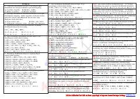

OROksidlanish-qaytarilish reaksiyalari mavzusiga oid kimyoviy testlar to'plami.
Ushbu qo'llanma kimyoviy elementlarning oksidlanish darajalari va oksidlanish-qaytarilish reaksiyalariga oid test savollarini o'z ichiga oladi. Materiallar o'quvchilarga kimyoviy tenglamalarni tahlil qilish va elementlarning valentlik xususiyatlarini o'rganishda yordam beradi.